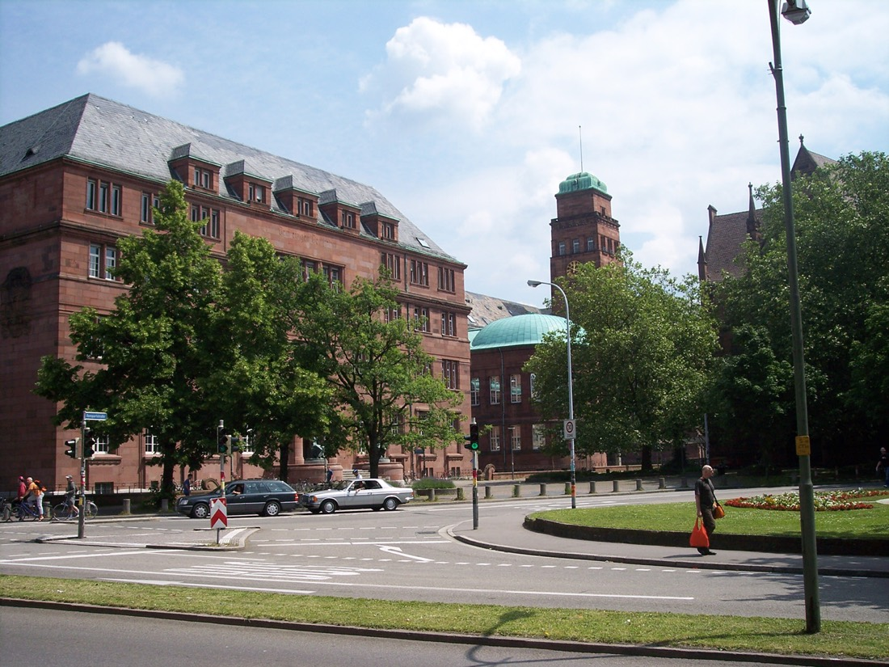
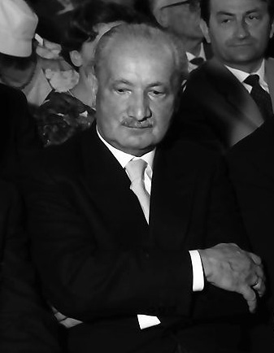
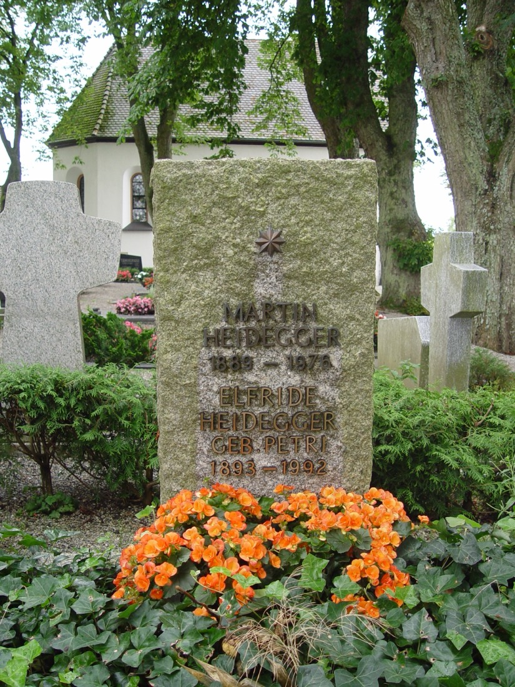
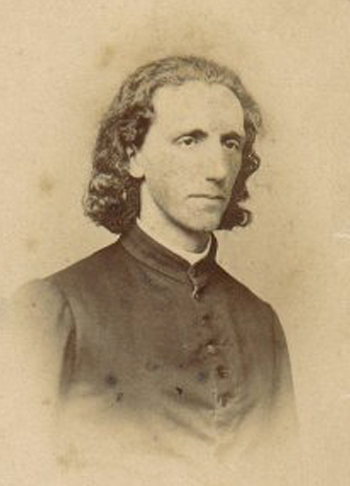
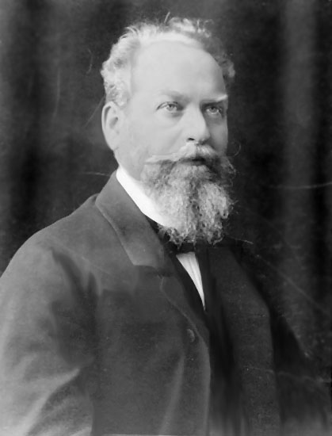
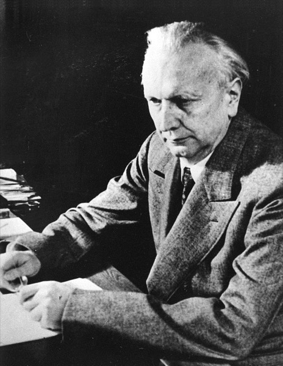
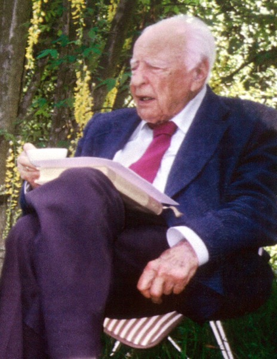
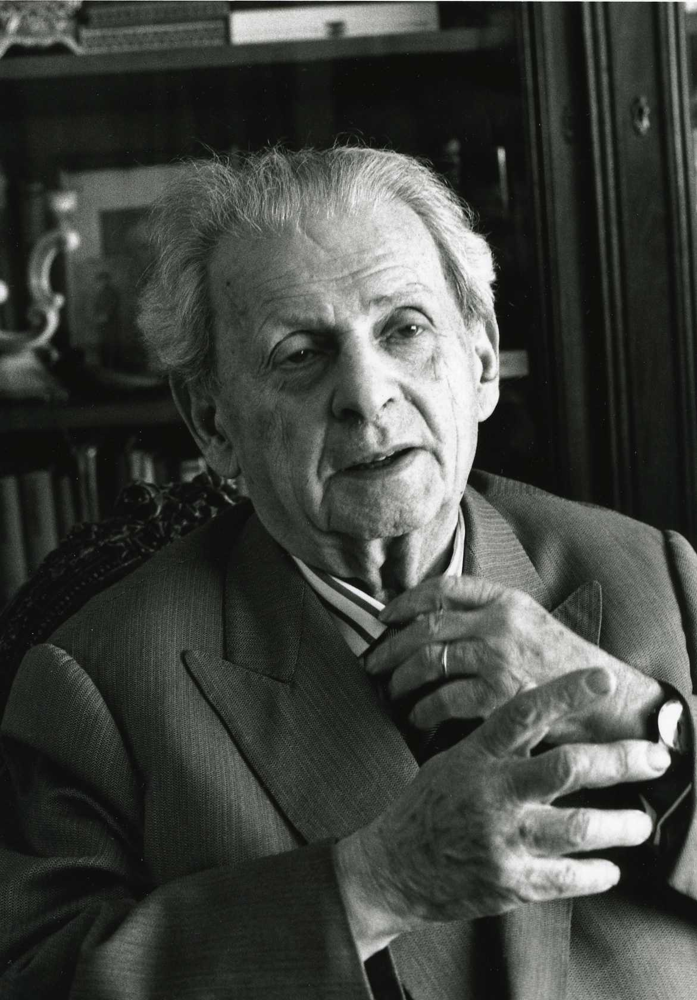
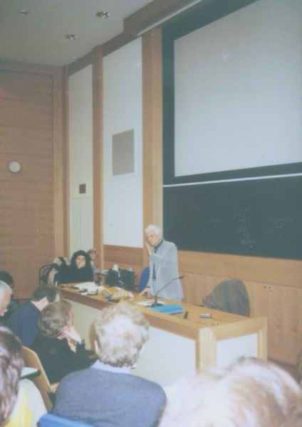

一个把哲学推进了一大步的人，同时是个纳粹
这两句话都是真的，而且不能靠牺牲任何一句来让自己好过一点。这一页按时间顺序摆事实：他做了什么、什么时候做的、哪些辩解站不住、哪些广为流传的指控其实查无实据。
先说结论：他 1933 年 5 月 1 日加入纳粹党，任弗莱堡大学校长约一年，战后被禁止教学六年，终生未对纳粹主义作出总体性的公开谴责。2014 年《黑皮笔记本》出版后，争论从"他的政治污点是否影响哲学"变成了"反犹主义是否已经进入了他的哲学结构本身"——这个问题至今没有共识。
1889 – 1976，外加身后两次引爆
生于梅斯基希
德国西南巴登地区的天主教小镇。父亲弗里德里希是箍桶匠兼教堂司事。这个乡土出身后来被他本人反复经营成一种哲学姿态——也成了阿多诺攻击"本真性行话"时的靶心之一。
一本书决定了一生的问题
十七岁，中学时期，家乡长辈、日后的弗莱堡大主教康拉德·格略贝尔送他一本布伦塔诺 1862 年的博士论文《论存在者在亚里士多德那里的多重含义》。海德格尔晚年多次自述，这本书是他"进入哲学的第一次笨拙尝试的支柱"。此后七十年，他只问一个问题：存在是什么意思。
从神学院退场
入弗莱堡大学攻读天主教神学，曾短暂成为耶稣会初学修士，一个月内因健康原因被劝退；1911 年正式放弃神职培养，转入数学与物理，再转哲学。具体动因（健康 vs 信仰危机）各传记表述略有出入，此处只写有档案支持的部分。
做胡塞尔的助教
任现象学创始人胡塞尔在弗莱堡的助教，共同主持讨论班。胡塞尔一度把他视为现象学的继承人。这段关系后来的走向，是这一页里最不体面的部分之一。
马堡：一个传奇课堂
任马堡大学哲学副教授。听过他课的人后来撑起了半个二十世纪思想史：伽达默尔、汉娜·阿伦特、汉斯·约纳斯、洛维特、列奥·施特劳斯、雅各布·克莱因、京特·安德斯。神学家布尔特曼是同事兼挚友，两人合开研讨班，通信七十封。
与阿伦特
阿伦特十八岁，犹太裔学生；他三十五岁，已婚，是她的老师。恋情持续约四年。此后近二十年疏离——其间他入党，她流亡。1950 年 2 月 7 日两人在弗莱堡重逢长谈，恢复往来。1969 年她为他八十寿辰撰文，被普遍认为是一次对他政治过往的辩护，至今有争议。
《存在与时间》——一本被逼出来的未完成之作
发表于胡塞尔主编的《哲学与现象学研究年鉴》第 8 卷，同年 Niemeyer 出单行本，题献胡塞尔："敬爱与友谊"。它之所以是残篇，原因很世俗：马堡要提名他接哈特曼的教席，柏林教育部以他"发表成果不多"为由卡住，他只好把写了一半的稿子交出去。原计划两部各三篇，实际只出了第一部前两篇——约三分之一。当年他就晋升了正教授。
"存在论差异"在讲台上定型
同年夏季学期的马堡讲座，即后来的《现象学之基本问题》（GA 24）。注意：这个术语并未在《存在与时间》正文中明确出现，思想虽已隐含，术语是在这里定型的。中文二手介绍常把它误溯到 SZ 某节。
接任胡塞尔的讲席
在胡塞尔退休前夕被召回弗莱堡，接下此前由李凯尔特和胡塞尔担任的哲学讲席。学生坐上了老师的位子。
校长任期：这一年的每一个日期都有档案
4 月 21 日当选弗莱堡大学校长，4 月 22 日就任。5 月 1 日加入纳粹党。5 月 27 日发表就职演说《德国大学的自我主张》，把大学重构为"劳动服务、国防服务、知识服务"三重绑定，征用元首原则。8 月被巴登邦当局任命为"元首校长"。1934 年 4 月 23 日提出辞呈，4 月 27 日获准——导火索是他拒绝撤换自己任命的两位系主任。
《哲学论稿（从本有而来）》写作
被许多研究者视为"转向"的核心文本。但它 1989 年才出版，英译本 1999 年才有——也就是说，转向的文本证据比转向本身晚了半个多世纪才公开，这让"转向发生在何时"始终是个悬案。
第五版：题献消失了
《存在与时间》第五版删去了给胡塞尔的题献。但坊间"海德格尔主动抹去恩师痕迹"的说法不准确：真实经过是 Niemeyer 出版社担心保留对犹太裔学者的题献会导致全书被禁而提议删除，海德格尔以必须保留第 38 页那条写明题献理由的脚注为条件同意。他 1966 年在《明镜》访谈中亲口确认了这一经过，政治传记作者胡戈·奥特亦有记载。战后版本恢复了题献。恢复的具体版次年份未找到可靠一手来源，故不写。
六年禁教
1945 年 7 月法国军政府首次禁止其教学，1946 年 12 月再次正式确认。1949 年 3 月去纳粹化委员会将其定性为"追随者"（Mitläufer），但教学禁令并未同时解除——实际到 1951 年 9 月才解禁并授予名誉教授身份，他终生未再获得正式哲学讲席。
此处存在来源分歧：斯坦福哲学百科词条写作"1949 年解除"，与另外几份编年资料（1945·7 / 1946·12 / 1951·9 三节点）不符。本站采信 1945–1951 区间，并标出这处分歧。
《关于人道主义的书信》
回应萨特 1945 年那场著名讲演，公开否认自己是存在主义者。也是他战后首次公开使用"转向"（Kehre）一词。详见下方"萨特误会了什么"。
不来梅四讲：座架登场
在不来梅俱乐部向一小群商界人士做四场演讲，总题《对存在者的洞察》，四讲依次为《物》《座架》《危险》《转向》。"座架"概念在此首次公开。这批演讲的原始全文直到 1994 年才作为全集第 79 卷出版——里面有一句他生前从未公开发表的话，见下方专节。
《技术的追问》
在慕尼黑巴伐利亚美术学院主办的"技术时代的艺术"系列讲座中重讲改写版，定名 Die Frage nach der Technik。1954 年先刊于该系列年鉴，同年收入《演讲与论文集》。改写时，1949 年那句关于灭绝营的类比被整段删去。
他推翻了自己的一个论证
《哲学的终结与思的任务》中，他回应 Boeder 1959 年的批评，承认早期希腊文献（荷马）中 alethes 主要用于言说、意思接近"正确、可靠"，而非他所主张的存在论意义上的"无蔽"。这是一次真实的自我修正——修正的是字源学论证，不是放弃"显/隐"这一存在论结构。
《明镜》访谈：迟到十年的辩解
接受 Augstein 与 Wolff 采访，条件是必须等他死后发表。他 1976 年 5 月 26 日去世，访谈五天后刊出，标题取自他的一句话：Nur noch ein Gott kann uns retten——只还有一个上帝能救渡我们。
《全集》开始出版
由 Klostermann 出版，他生前亲自定下编排顺序：已发表著作 / 讲座课程 / 未发表论著 / 笔记提要四部。全集计划 102 卷另加两卷补编，至今已出版约 99 卷、约三万七千页。这个"生前定序"后来成了争议的一部分——什么时候放出什么，是他自己安排的。
GA 79 出版：那句话第一次完整公开
不来梅演讲全文首次以原貌出版。见下方专节。
《黑皮笔记本》：第二次引爆
全集第 94–96 卷起陆续出版，主编彼得·特拉夫尼。里面有被广泛认定为反犹的段落。争论由此从"人品问题"升级为"哲学结构问题"。
这条时间线落在地上的样子



托特瑙堡的那间小屋（die Hütte）——他写作《存在与时间》的地方——至今是私产，不对外开放。Wikimedia Commons 上没有任何一张可自由使用、且小屋本体清晰可辨的照片，因此这一格宁可空着，用黑森林的林间小径代替。
围绕他的那些人
老师、学生、情人、批评者、辩护人、检察官。他一个人牵动了二十世纪欧陆哲学的大半张网。




布伦塔诺（1838 – 1917）
那本 1862 年的博士论文《论存在者在亚里士多德那里的多重含义》，给了十七岁的海德格尔一生的问题。他也是胡塞尔的老师——两代现象学的共同源头。

胡塞尔（1859 – 1938）
现象学创始人。收他做助教、把讲席传给他、被他题献。1933 年后作为犹太裔被排除出大学体系，海德格尔时任校长而未公开抗议。1938 年去世，海德格尔未出席葬礼。
汉娜·阿伦特（1906 – 1975）
1924 年师从他时十八岁。后流亡美国，写出《极权主义的起源》《艾希曼在耶路撒冷》。1950 年与他和解，1969 年为他八十寿辰撰文——那篇文章被认为过于宽容，成为她自己声誉上的一处争议。

雅斯贝尔斯（1883 – 1969）
曾与他并称德国存在哲学两大家，一度是朋友。因海德格尔的纳粹立场决裂——雅斯贝尔斯的妻子是犹太人。战后他在去纳粹化程序中出具的意见，对结果影响很大。

伽达默尔（1900 – 2002）
马堡学生，后以《真理与方法》创立哲学诠释学，把海德格尔的存在论转成了一套可操作的理解理论。二十世纪最有影响的海德格尔继承者。
汉斯·约纳斯（1903 – 1993）
犹太裔学生，流亡后写出《责任原理》——一部把技术伦理推向未来世代的著作。他终生不原谅老师，却又是从老师的技术追问里长出来的。
卡尔纳普（1891 – 1970）
1932 年《通过语言的逻辑分析清除形而上学》，逐句解剖海德格尔《什么是形而上学？》里的"Das Nichts selbst nichtet"（无自身虚无着），判定它是语法合法而逻辑无意义的"貌似句子"。分析/欧陆分家的标志性一击。该文载 Erkenntnis 卷 2，因该期印行跨年，年份标注 1931/1932 不一，本站统一作 1932。
阿多诺（1903 – 1969）
1964 年《本真性的行话》。要点常被误传：这本书的主要靶子不是海德格尔本人，而是战后德国把"本真""此在"变成一套腔调的模仿者。但阿多诺同时指出，海德格尔对乡土本源词语的推崇，正是这种庸俗化的土壤。

列维纳斯（1906 – 1995）
早年把现象学引入法国的功臣之一，后来成为最深刻的批评者：海德格尔以存在论为第一哲学，会把"他者"化约进"同一"。他主张伦理学才是第一哲学——面容开启的责任先于对存在的把握。

德里达（1930 – 2004）
1987 年《论精神》：追踪 Geist（精神）一词的命运——1927 年在《存在与时间》里被打上引号悬置，1933 年校长演说里被无引号地正面征用。这个转变本身就是证据。

休伯特·德雷福斯（1929 – 2017）
分析哲学训练出身，不是海德格尔的学生（1953 年在弗莱堡见过一面，据同事转述"令人失望"）。他把上手状态分析变成炸 AI 地基的炸药，1991 年写出《在世界之中存在》。详见 座架与 AI。
Faye / Trawny / Sheehan
2014 年后争论的三方：Faye 主张把他逐出哲学史；Trawny（黑皮本主编）承认存在实质反犹但反对全盘否定；Sheehan 2015 年在《Philosophy Today》上指控 Faye 的引文与翻译有系统性错误。见下节。
萨特误会了什么

1945 年 10 月 28 日，萨特在巴黎讲《存在主义是一种人道主义》，把海德格尔列为存在主义阵营，并给出了那句流传最广的口号：存在先于本质。海德格尔 1946 年 12 月应友人博弗雷之问写了回信，1947 年发表为《关于人道主义的书信》，公开拆台。
他的两点反驳：
- "存在先于本质"仍然是形而上学。这句话颠倒了 existentia 与 essentia 这对传统范畴的次序，但颠倒一个形而上学命题，得到的仍是一个形而上学命题——你还在同一张棋盘上。
- 萨特把"此在"读成了笛卡尔式主体。在萨特那里，人通过自由选择造就自身，主体重新回到中心。而海德格尔要做的，恰恰是取消这个中心。
三条要分开算的账
关于海德格尔与纳粹，公共讨论里最常见的毛病是把三件不同性质的事混成一团：有档案证据的行为、流传广泛但无据的传闻、解释性的哲学指控。混在一起的结果是，辩护方靠戳穿传闻来豁免行为，控方靠行为来坐实解释。这里分开摆。
第一条：有档案证据的行为
1933 年 4 月 21 日当选校长、5 月 1 日入党、5 月 27 日发表就职演说、8 月任"元首校长"、1934 年 4 月辞职。战后 1945–1951 年被禁止教学。1941 年第五版删题献（经过见上，责任分配与坊间说法不同）。1938 年胡塞尔去世未出席葬礼。终生未对纳粹主义作出总体性的公开谴责。这些都不需要解释，只需要记住。
但不能因此走向另一个极端。真实的一层是：1933 年 4 月纳粹颁布《重建职业公务员法》，以种族条款把犹太裔人员（包括胡塞尔这样的荣休教授）排除出国家机构的正常使用权。这是全国性法律的执行结果，不是海德格尔对胡塞尔的个人化打压；而作为执行这套法令的校长，他的责任是另一个层面的问题。
戏剧化的版本是假的，结构性的责任是真的。两者都要说。
Ackerbau ist jetzt motorisierte Ernährungsindustrie, im Wesen das Selbe wie die Fabrikation von Leichen in Gaskammern und Vernichtungslagern, das Selbe wie die Blockade und Aushungerung von Ländern, das Selbe wie die Fabrikation von Wasserstoffbomben.
"农业现在是机械化的食品工业，本质上与毒气室和灭绝营中尸体的生产是同一回事，与对国家的封锁和饥饿化是同一回事，与氢弹的生产是同一回事。"
发表史本身就是证据的一部分：这句话海德格尔生前从未公开发表过。1953 年改写为《技术的追问》时，"农业现在是机械化的食品工业"这个开头以改写形式保留，后面整段类比被删去。完整原文直到 1994 年全集第 79 卷出版才面世。
学界评价：拉库-拉巴特指出这是海德格尔对大屠杀唯一一次、极其间接的提及，并称这种反应"不充分且不可容忍"。彼得·戈登在《纽约书评》上评论说，此句"抹除了道德区分"——把维系生命的技术与制造死亡的技术等量齐观，把纳粹屠杀降格为一个去历史化的"机械化"现象的一个例证，从而回避了具体的历史与道德责任。
另需注意：不来梅四讲中还有一处不同的相关段落（GA 79 第 56 页，《危险》一讲），常被与此句混引，两者是不同的文字。
《黑皮笔记本》与三方立场
2014 年起，全集第 94–96 卷陆续出版海德格尔 1931 年起的私人思考手记，主编彼得·特拉夫尼。其中包含被广泛认定为反犹的段落，最常被引的一处写于 1941 年，把"世界犹太人"（Weltjudentum）问题定性为"非种族的、而是形而上学的问题"，并将其与布尔什维主义、纳粹主义并列为"星球性主要罪犯"。
三方立场，如实并陈：
Emmanuel Faye
法文原版 2005、耶鲁英译 2009。主张海德格尔的全部哲学等同于纳粹意识形态，建议把他的著作从图书馆哲学类移到纳粹主义历史档案类。
Peter Trawny
黑皮本主编。不否认存在实质性的反犹陈述，但反对全盘逐出；主张这是思想中一个必须严肃对待、却不等同于其全部哲学的"污染层"。
Thomas Sheehan
2015 年在《Philosophy Today》59(3) 发文，指控 Faye 的书中充斥误译、断章取义与带扭曲倾向的改写，逐条列举其所谓的错误与伪造。此文本身也引来了反驳。
此外，哈佛的彼得·戈登 2010 年在 NDPR 上对 Faye 提出方法论批评：用三页篇幅分析整部《存在与时间》就断言它是纳粹意识形态基础，论证不足；大量使用连坐式关联；从 1933–34 年关于"敌人"的讨论直接推出大屠杀，是过度的必然性论证。
可行的做法是第三种：读他，并且每一次都把这笔账一起端上桌。这也是这座站为什么把政治问题放在历史页的正中，而不是塞进脚注。
"只还有一个上帝能救渡我们"
1966 年 9 月 23 日录制，条件是死后才能发表。1976 年 5 月 26 日他去世，31 日访谈刊出。
那句标题出现在访谈末尾，语境是技术：他认为在座架的统治下，人已经无法凭自身力量摆脱现代技术的命运。这是一种期待救渡的姿态，不是一个基督教有神论主张，更不是政治方案。
但访谈里还有另一部分内容，需要单独处理：他的自我辩解。
- 声称就任校长是为了"从纳粹化进程中拯救大学"；
- 声称此后采取了某种"精神抵抗"；
- 为 1935 年《形而上学导论》里"国家社会主义运动的内在真理与伟大"一语辩解，称原本括号内另有针对"星球性技术与现代人相遇"的补充，是为了蒙蔽纳粹线人，而学生们懂他的真意。
公平起见也要记下另一面：有记录显示他任内曾任命犹太裔院长、阻止张贴"犹太告示"、阻止过一次焚书。这些是真的。但它们在战后被他本人放大成了"抵抗"的证据，而这个放大本身，就是上面那套叙事的一部分。
本页图片均取自 Wikimedia Commons，为公有领域或自由许可作品，按许可要求逐条署名：
公有领域——海德格尔（约 1920s，PD-Germany，作者不明）；胡塞尔（约 1900）；汉娜·阿伦特（1924）；雅斯贝尔斯（1946，Archivio Mondadori，PD-Italy）；布伦塔诺（19 世纪末，摄影 M. Wacker）；荷尔德林粉彩像（1792，Franz Carl Hiemer 绘，PD-Art）。
知识共享（CC）——海德格尔 1960 年肖像：摄影 Willy Pragher／Landesarchiv Baden-Württemberg，CC BY-SA 3.0；萨特在弗莱堡大学 1953：摄影 Willy Pragher／Landesarchiv Baden-Württemberg，CC BY 3.0 DE；伽达默尔：摄影 Leena Ruuskanen，CC BY 3.0；阿多诺：摄影 Jeremy J. Shapiro，CC BY-SA 3.0 + GFDL 1.2；列维纳斯：摄影 Bracha L. Ettinger，CC BY-SA 2.5；德里达：Commons 上传者 Auto-épreuve，CC BY-SA 4.0；德雷福斯：摄影 Jörg Noller，CC BY-SA 3.0 DE；梅斯基希故居与墓地：摄影 Zollernalb，CC BY-SA 3.0 / CC BY 2.5 / GFDL；黑森林 Lotharpfad：摄影 Smilla Heckel，CC BY-SA 4.0。
其他自由许可——弗莱堡大学主楼：摄影 Chalco，PD-self；马堡老大学：摄影 A. Savin，Free Art License (FAL，一种与 CC BY-SA 同类的 copyleft 自由许可)。
原图与完整许可条款以 Commons 各文件页为准。本站未收录的图片：《存在与时间》1927 年首版书影、《哲学与现象学研究年鉴》第 8 卷、《明镜》1976 年 5 月 31 日刊封面、托特瑙堡小屋清晰照——这四项在 Commons 上均无可自由使用的版本，因此宁可空着，不用来路不明的替代品。
本站为非商业个人读书笔记，仅使用可自由传播的图片。如涉及版权问题，请通过 GitHub 仓库 issue 联系，我们将及时处理。